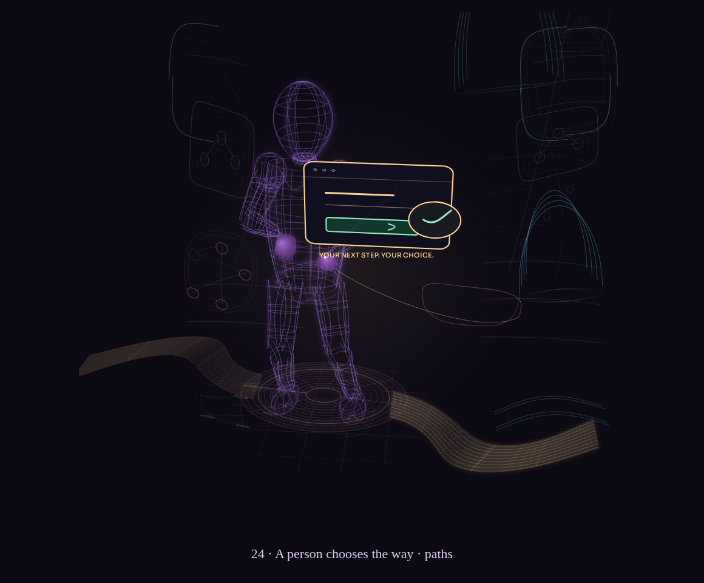
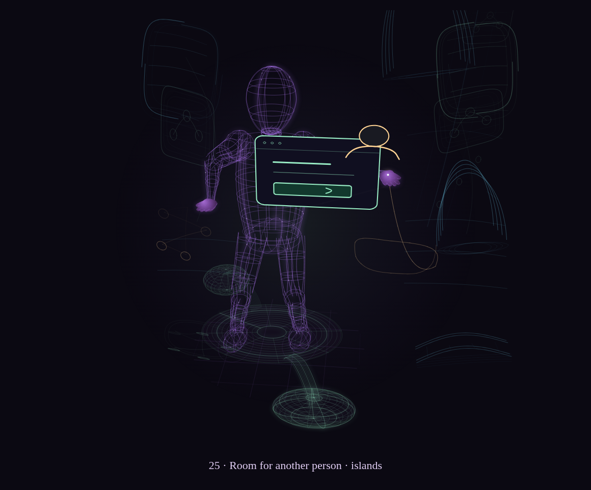
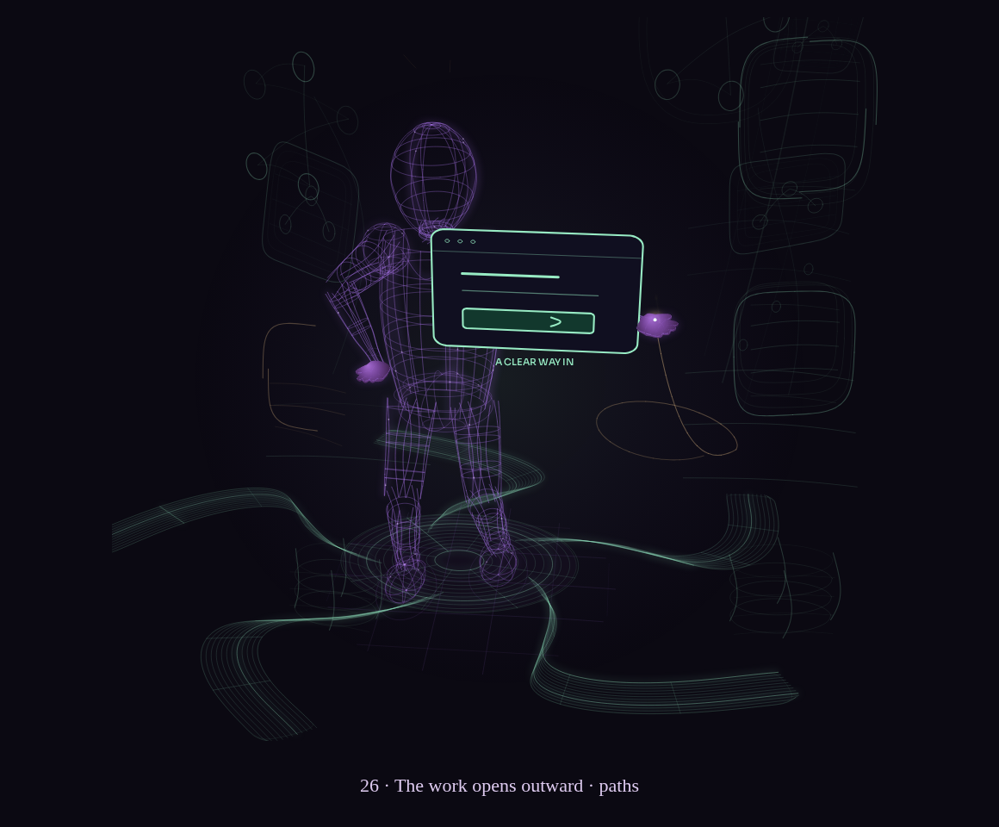
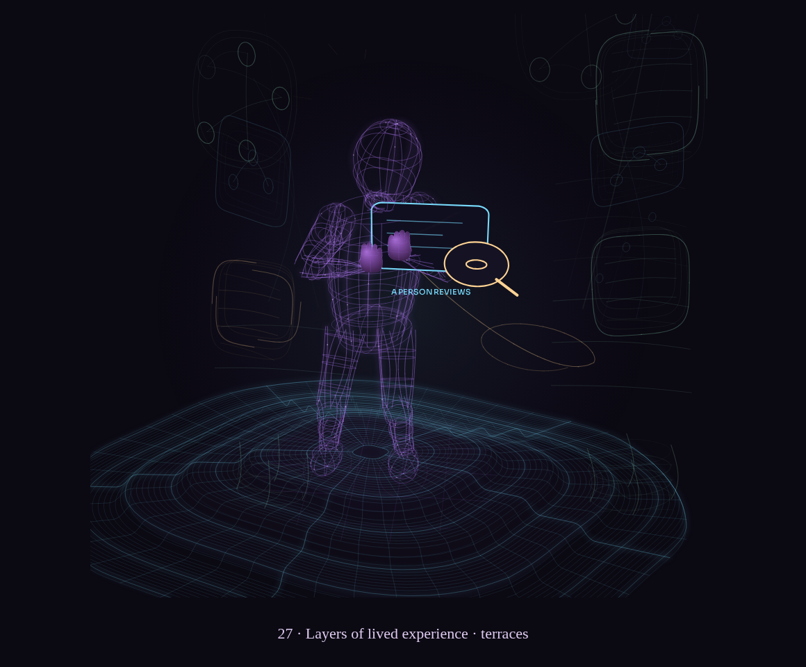
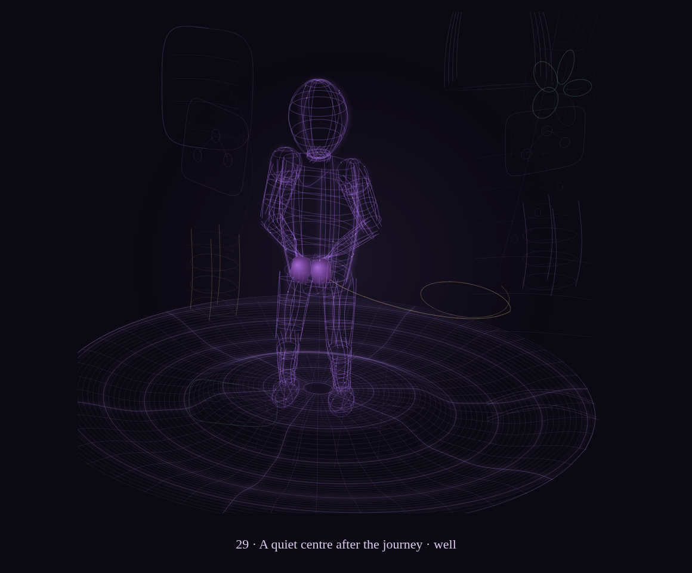
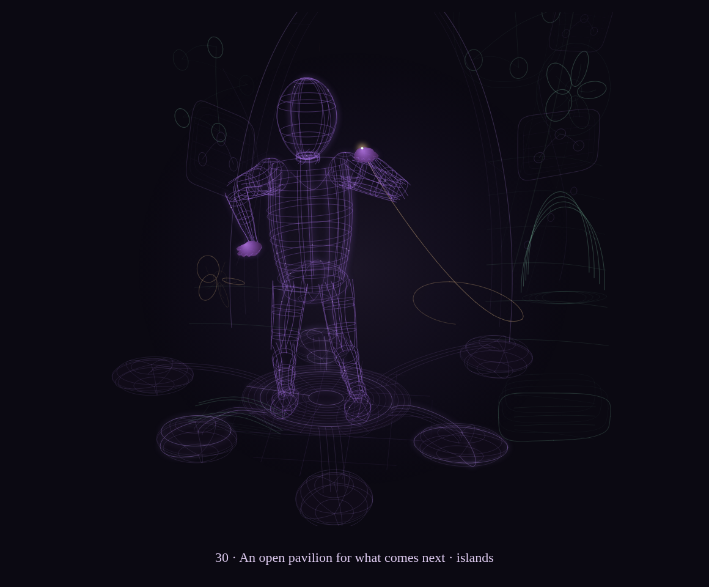

31 worlds · fixed elevated study view

24 · A person chooses the way
paths

25 · Room for another person
islands

26 · The work opens outward
paths

27 · Layers of lived experience
terraces
28 · An offer across the gap
islands

29 · A quiet centre after the journey
well

30 · An open pavilion for what comes next
islands